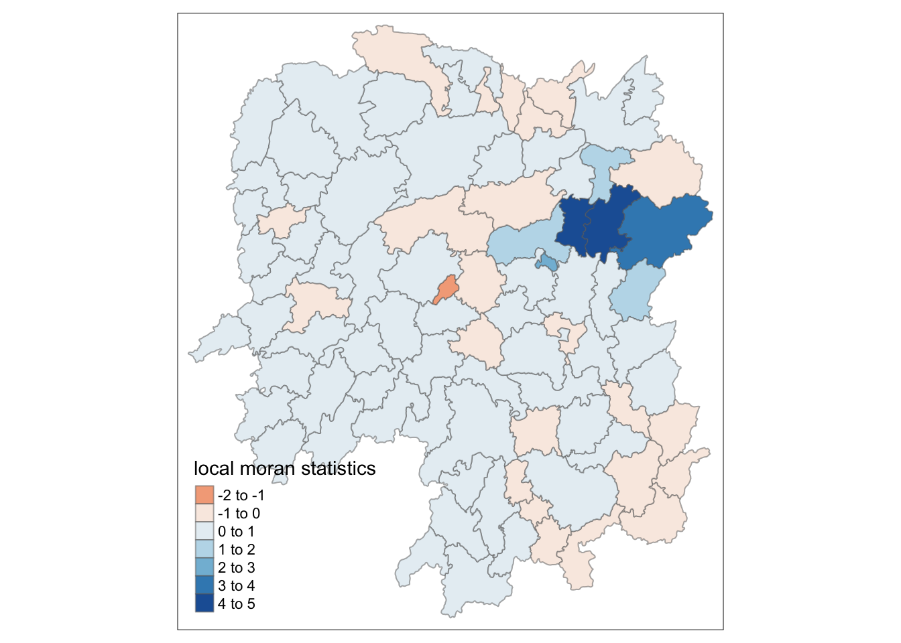
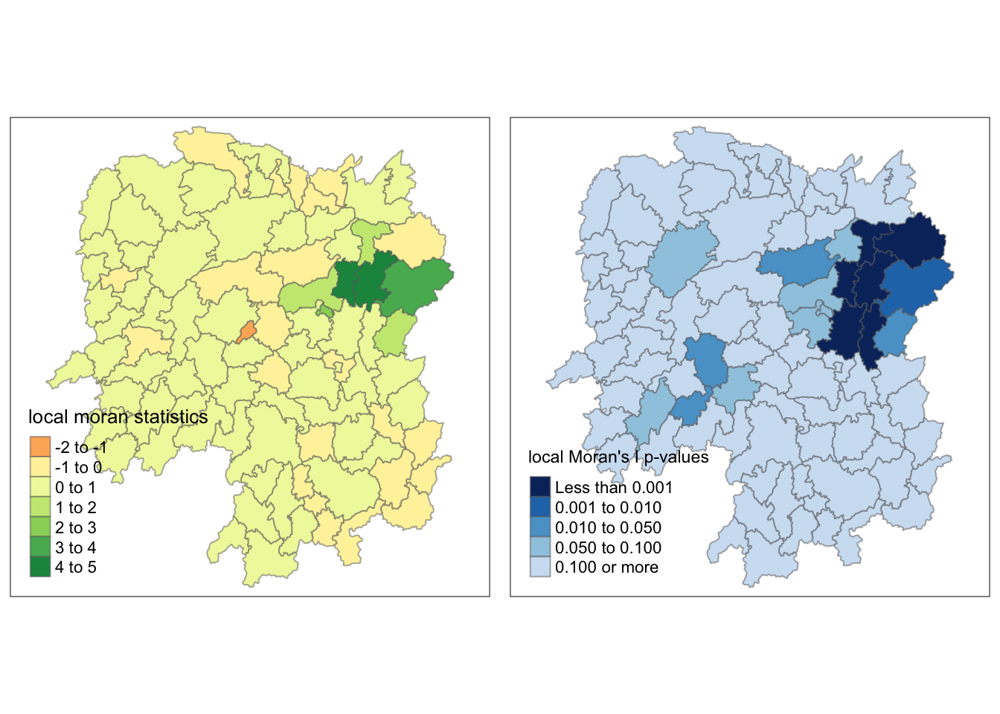
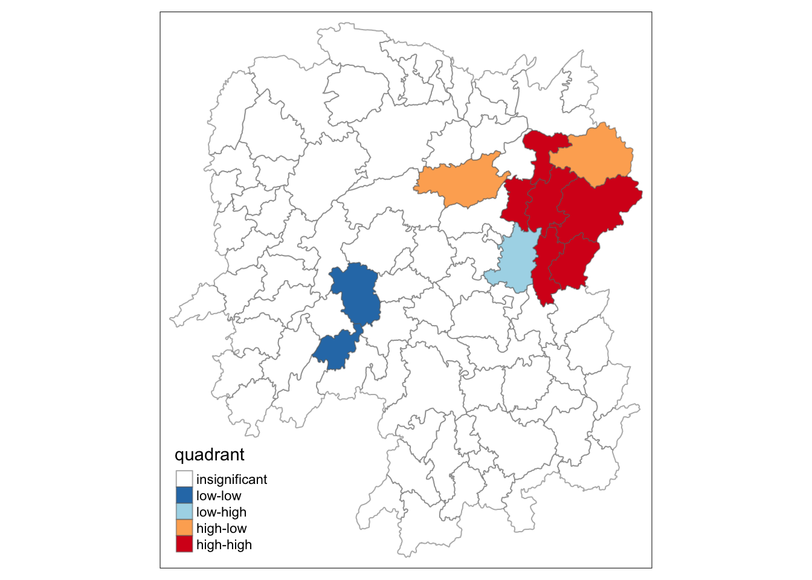
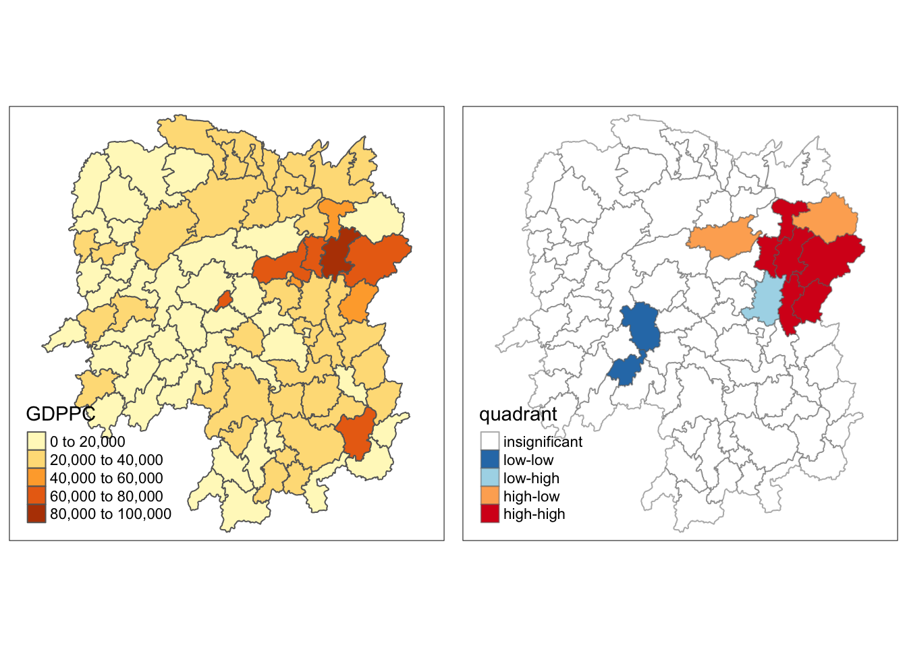
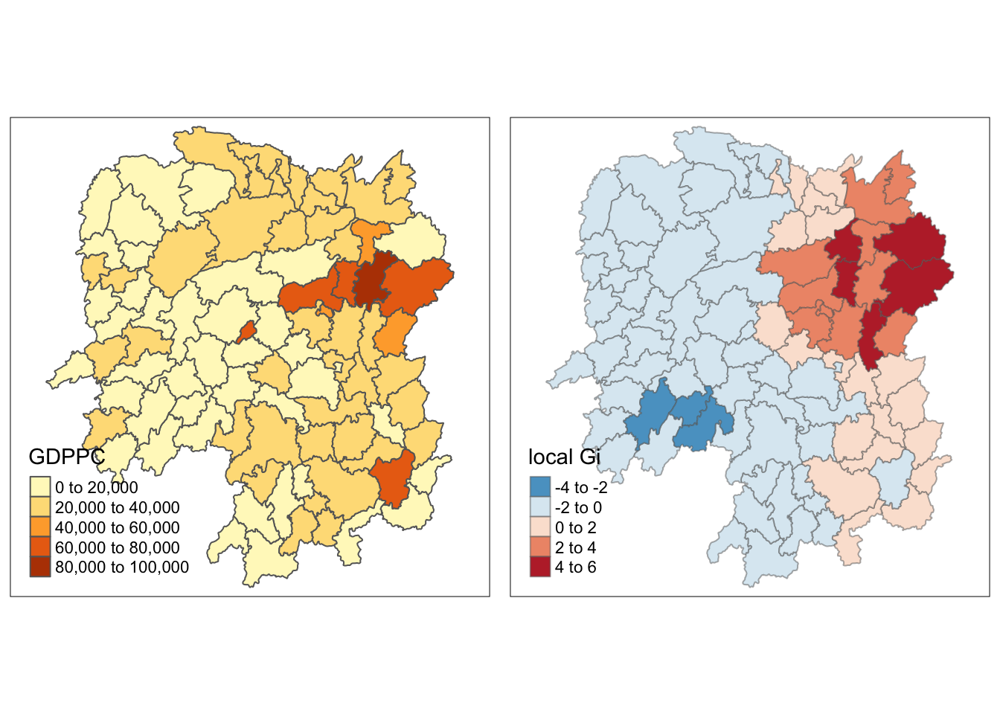

pacman::p_load(sf, spdep, tmap, tidyverse)Hands-on_Ex2
Global and Local Measures of Spatial Autocorrelation
We will learn how to compute Global and Local Measure of Spatial Autocorrelation (GLSA) by using spdep package.
Getting Started
The Analytical Question
Our task in this study, hence, is to apply appropriate spatial statistical methods to discover if development are even distributed geographically.
In this case study, we are interested to examine the spatial pattern of a selected development indicator (i.e. GDP per capita) of Hunan Provice, People Republic of China.
The Study Area and Data
2 datasets will be used in this hands-on exercise:
- Hunan province administrative boundary layer at county level. This is a geospatial data set in ESRI shapefile format.
- Hunan_2012.csv: This csv file contains selected Hunan’s local development indicators in 2012.
Setting the Analytical Tools
The code chunk below is used to perform the following tasks:
- Creating a package list containing the necessary R packages,
- Checking if the R packages in the package list have been installed in R,
- If they have yet to be installed, RStudio will installed the missing packages,
- Launching the packages into R environment.
Getting the Data Into R Environment
We will learn how to bring a geospatial data and its associated attribute table into R environment.
Import shapefile into r environment
The code chunk below uses st_read() of sf package to import Hunan shapefile into R. The imported shapefile will be simple features Object of sf.
hunan <- st_read(dsn = "data/geospatial",
layer = "Hunan")Reading layer `Hunan' from data source
`/Users/jonathanley/Dropbox/SMU Modules/ISSS624 - Applied Geospatial Analytics/Quarto/jonathanley1986/ISSS624/Hands-on_Ex/data/geospatial'
using driver `ESRI Shapefile'
Simple feature collection with 88 features and 7 fields
Geometry type: POLYGON
Dimension: XY
Bounding box: xmin: 108.7831 ymin: 24.6342 xmax: 114.2544 ymax: 30.12812
Geodetic CRS: WGS 84Import csv file into r environment
Next, we will import Hunan_2012.csv into R by using read_csv() of readr package.
hunan2012 <- read_csv("data/aspatial/Hunan_2012.csv",show_col_types = FALSE)Performing relational join
The code chunk below will be used to update the attribute table of hunan’s SpatialPolygonsDataFrame with the attribute fields of hunan2012 dataframe.
hunan <- left_join(hunan,hunan2012)Joining, by = "County"Visualising Regional Development Indicator
We are going to prepare a basemap and a choropleth map showing the distribution of GDPPC 2012 by using qtm() of tmap package.
equal <- tm_shape(hunan) +
tm_fill("GDPPC",
n = 5,
style = "equal") +
tm_borders(alpha = 0.5) +
tm_layout(main.title = "Equal interval classification")
quantile <- tm_shape(hunan) +
tm_fill("GDPPC",
n = 5,
style = "quantile") +
tm_borders(alpha = 0.5) +
tm_layout(main.title = "Equal quantile classification")
tmap_arrange(equal,
quantile,
asp=1,
ncol=2)
Global Spatial Autocorrelation
We will learn how to compute global spatial autocorrelation statistics and to perform spatial complete randomness test for global spatial autocorrelation.
Computing Contiguity Spatial Weights
The spatial weights is used to define the neighbourhood relationships between the geographical units (i.e. county) in the study area.
In the code chunk below, poly2nb() of spdep package is used to compute contiguity weight matrices for the study area. This function builds a neighbours list based on regions with contiguous boundaries.
The code chunk below is used to compute Queen contiguity weight matrix.
wm_q <- poly2nb(hunan,
queen=TRUE)
summary(wm_q)Neighbour list object:
Number of regions: 88
Number of nonzero links: 448
Percentage nonzero weights: 5.785124
Average number of links: 5.090909
Link number distribution:
1 2 3 4 5 6 7 8 9 11
2 2 12 16 24 14 11 4 2 1
2 least connected regions:
30 65 with 1 link
1 most connected region:
85 with 11 linksRow-standardised weights matrix
We need to assign weights to each neighboring polygon. In our case, each neighboring polygon will be assigned equal weight (style=“W”).
rswm_q <- nb2listw(wm_q,
style="W",
zero.policy = TRUE)
rswm_qCharacteristics of weights list object:
Neighbour list object:
Number of regions: 88
Number of nonzero links: 448
Percentage nonzero weights: 5.785124
Average number of links: 5.090909
Weights style: W
Weights constants summary:
n nn S0 S1 S2
W 88 7744 88 37.86334 365.9147Global Spatial Autocorrelation: Moran’s I
We will learn how to perform Moran’s I statistics testing by using moran.test() of spdep.
Maron’s I test
The code chunk below performs Moran’s I statistical testing using moran.test() of spdep.
moran.test(hunan2012$GDPPC,
listw = rswm_q,
zero.policy = TRUE,
na.action=na.omit)
Moran I test under randomisation
data: hunan2012$GDPPC
weights: rswm_q
Moran I statistic standard deviate = -0.55119, p-value = 0.7092
alternative hypothesis: greater
sample estimates:
Moran I statistic Expectation Variance
-0.047840901 -0.011494253 0.004348351 Computing Monte Carlo Moran’s I
The code chunk below performs permutation test for Moran’s I statistic by using moran.mc() of spdep. A total of 1000 simulation will be performed.
set.seed(1234)
bperm= moran.mc(hunan2012$GDPPC,
listw=rswm_q,
nsim=999,
zero.policy = TRUE,
na.action=na.omit)
bperm
Monte-Carlo simulation of Moran I
data: hunan2012$GDPPC
weights: rswm_q
number of simulations + 1: 1000
statistic = -0.047841, observed rank = 321, p-value = 0.679
alternative hypothesis: greaterVisualising Monte Carlo Moran’s I
We will plot the distribution of the statistical values as a histogram by using the code chunk below.
In the code chunk below hist() and abline() of R Graphics are used.
mean(bperm$res[1:999])[1] -0.01305777var(bperm$res[1:999]) [1] 0.004542948summary(bperm$res[1:999]) Min. 1st Qu. Median Mean 3rd Qu. Max.
-0.17956 -0.06141 -0.01743 -0.01306 0.02887 0.23587 hist(bperm$res,
freq=TRUE,
breaks=20,
xlab="Simulated Moran's I")
abline(v=0,
col="red") Global Spatial Autocorrelation: Geary’s
We will learn how to perform Geary’s c statistics testing by using appropriate functions of spdep package.
The code chunk below performs Geary’s C test for spatial autocorrelation by using geary.test() of spdep.
geary.test(hunan2012$GDPPC, listw=rswm_q)
Geary C test under randomisation
data: hunan2012$GDPPC
weights: rswm_q
Geary C statistic standard deviate = -0.36832, p-value = 0.6437
alternative hypothesis: Expectation greater than statistic
sample estimates:
Geary C statistic Expectation Variance
1.0315475 1.0000000 0.0073364 Computing Monte Carlo Geary’s C
The code chunk below performs permutation test for Geary’s C statistic by using geary.mc() of spdep.
set.seed(1234)
bperm=geary.mc(hunan2012$GDPPC,
listw=rswm_q,
nsim=999)
bperm
Monte-Carlo simulation of Geary C
data: hunan2012$GDPPC
weights: rswm_q
number of simulations + 1: 1000
statistic = 1.0315, observed rank = 638, p-value = 0.638
alternative hypothesis: greaterVisualising the Monte Carlo Geary’s C
We will plot a histogram to reveal the distribution of the simulated values by using the code chunk below.
mean(bperm$res[1:999])[1] 1.000736var(bperm$res[1:999])[1] 0.007486288summary(bperm$res[1:999]) Min. 1st Qu. Median Mean 3rd Qu. Max.
0.7091 0.9416 1.0034 1.0007 1.0560 1.3396 hist(bperm$res, freq=TRUE, breaks=20, xlab="Simulated Geary c")
abline(v=1, col="red") 
Spatial Correlogram
They show how correlated are pairs of spatial observations when you increase the distance (lag) between them - they are plots of some index of autocorrelation (Moran’s I or Geary’s c) against distance.
They are very useful as an exploratory and descriptive tool. For this purpose they actually provide richer information than variograms.
Compute Moran’s I correlogram
In the code chunk below, sp.correlogram() of spdep package is used to compute a 6-lag spatial correlogram of GDPPC. The global spatial autocorrelation used in Moran’s I. The plot() of base Graph is then used to plot the output.
MI_corr <- sp.correlogram(wm_q,
hunan2012$GDPPC,
order=6,
method="I",
style="W")
plot(MI_corr)
print(MI_corr)Spatial correlogram for hunan2012$GDPPC
method: Moran's I
estimate expectation variance standard deviate Pr(I) two sided
1 (88) -0.04784090 -0.01149425 0.00434835 -0.5512 0.5815
2 (88) -0.03164659 -0.01149425 0.00209624 -0.4402 0.6598
3 (88) -0.00013462 -0.01149425 0.00146019 0.2973 0.7663
4 (88) 0.00398743 -0.01149425 0.00117166 0.4523 0.6511
5 (88) -0.06581650 -0.01149425 0.00124395 -1.5402 0.1235
6 (88) -0.00729186 -0.01149425 0.00167910 0.1026 0.9183Compute Geary’s C correlogram and plot
In the code chunk below, sp.correlogram() of spdep package is used to compute a 6-lag spatial correlogram of GDPPC. The global spatial autocorrelation used in Geary’s C. The plot() of base Graph is then used to plot the output.
GC_corr <- sp.correlogram(wm_q,
hunan2012$GDPPC,
order=6,
method="C",
style="W")
plot(GC_corr)
print(GC_corr)Spatial correlogram for hunan2012$GDPPC
method: Geary's C
estimate expectation variance standard deviate Pr(I) two sided
1 (88) 1.0315475 1.0000000 0.0073364 0.3683 0.71264
2 (88) 0.9329020 1.0000000 0.0049126 -0.9573 0.33841
3 (88) 0.9299705 1.0000000 0.0049005 -1.0004 0.31713
4 (88) 0.9659343 1.0000000 0.0039631 -0.5411 0.58842
5 (88) 1.1380900 1.0000000 0.0035568 2.3154 0.02059 *
6 (88) 1.0477936 1.0000000 0.0058042 0.6273 0.53044
---
Signif. codes: 0 '***' 0.001 '**' 0.01 '*' 0.05 '.' 0.1 ' ' 1Cluster and Outlier Analysis
We will learn how to apply appropriate Local Indicators for Spatial Association (LISA), especially local Moran’I to detect cluster and/or outlier from GDP per capita 2012 of Hunan Province, PRC.
Computing local Moran’s I
To compute local Moran’s I, the localmoran() function of spdep will be used. It computes Ii values, given a set of zi values and a listw object providing neighbour weighting information for the polygon associated with the zi values.
The code chunks below are used to compute local Moran’s I of GDPPC2012 at the county level.
fips <- order(hunan$County)
localMI <- localmoran(hunan2012$GDPPC, rswm_q)
head(localMI) Ii E.Ii Var.Ii Z.Ii Pr(z != E(Ii))
1 -0.0447465780 -5.004845e-03 8.356794e-02 -0.1374760 0.8906545
2 0.0408817387 -7.011066e-03 1.168306e-01 0.1401174 0.8885672
3 0.0231470020 -2.815006e-05 5.976810e-04 0.9479553 0.3431522
4 0.1648163587 -5.008916e-03 1.058194e-01 0.5220591 0.6016292
5 0.0703372941 -9.681197e-04 2.053576e-02 0.4975848 0.6187767
6 -0.0002739628 -9.001050e-09 1.510502e-07 -0.7048826 0.4808833The code chunk below list the content of the local Moran matrix derived by using printCoefmat().
printCoefmat(data.frame(localMI[fips,], row.names=hunan2012$County[fips]), check.names=FALSE) Ii E.Ii Var.Ii Z.Ii Pr.z....E.Ii..
Shaodong 3.1808e-03 -3.6592e-05 4.2790e-04 1.5554e-01 0.8764
Cili 7.0089e-02 -1.6747e-03 1.6894e-02 5.5213e-01 0.5809
Anhua -4.4747e-02 -5.0048e-03 8.3568e-02 -1.3748e-01 0.8907
Nan 1.0804e-01 -4.9497e-04 8.3022e-03 1.1912e+00 0.2336
Xiangyin -4.0731e-01 -4.7442e-03 1.3528e-01 -1.0945e+00 0.2737
Hanshou 5.4785e-02 -6.0620e-04 1.0167e-02 5.4935e-01 0.5828
Yueyang 1.2372e-01 -1.9768e-04 2.7303e-03 2.3716e+00 0.0177
Lianyuan -1.3580e-02 -1.8983e-03 4.0230e-02 -5.8241e-02 0.9536
Huarong -4.5796e-02 -1.8667e-03 3.1268e-02 -2.4843e-01 0.8038
Xiangxiang -1.0296e-01 -1.2703e-03 3.6348e-02 -5.3338e-01 0.5938
Zhuzhou 1.1903e-01 -5.2432e-04 1.1127e-02 1.1334e+00 0.2571
Liling -7.5950e-01 -1.5097e-02 3.1570e-01 -1.3249e+00 0.1852
Linli 4.7057e-02 -6.8294e-05 1.1460e-03 1.3921e+00 0.1639
Ningxiang -1.4998e+00 -7.3878e-02 1.4527e+00 -1.1830e+00 0.2368
Dao 3.1253e-01 -2.0824e-03 5.9539e-02 1.2893e+00 0.1973
Yuanling 5.4459e-03 -2.2981e-06 2.0380e-05 1.2069e+00 0.2275
Ningyuan 2.6616e-01 -7.0884e-03 1.1811e-01 7.9508e-01 0.4266
Anren 4.0882e-02 -7.0111e-03 1.1683e-01 1.4012e-01 0.8886
Hengdong -6.3606e-02 -4.9063e-04 6.7742e-03 -7.6685e-01 0.4432
Hengnan 2.4216e-02 -3.2160e-04 3.7597e-03 4.0018e-01 0.6890
Hengshan 3.3641e-02 -3.0437e-05 5.1076e-04 1.4899e+00 0.1363
Yuanjiang 6.4942e-02 -1.7760e-04 2.9798e-03 1.1929e+00 0.2329
You 2.8095e-01 -7.2728e-03 9.9736e-02 9.1264e-01 0.3614
Taoyuan -7.0785e-02 -1.2039e-04 5.2350e-03 -9.7667e-01 0.3287
Pingjiang -3.0356e-01 -2.6457e-03 7.5603e-02 -1.0944e+00 0.2738
Huitong -6.1100e-01 -5.2447e-03 1.1077e-01 -1.8200e+00 0.0688
Dongan 8.0028e-02 -6.3485e-04 1.0647e-02 7.8174e-01 0.4344
Shimen 1.0870e-01 -3.8603e-04 8.1932e-03 1.2052e+00 0.2281
Zixing 5.4967e-01 -8.8210e-02 3.4977e+00 3.4107e-01 0.7330
Jiahe 2.4673e-01 -3.0550e-03 8.7263e-02 8.4559e-01 0.3978
Anxiang 2.3147e-02 -2.8150e-05 5.9768e-04 9.4796e-01 0.3432
Qidong -1.5696e-02 -2.1207e-03 3.5512e-02 -7.2037e-02 0.9426
Shuangfeng 1.0770e-01 -2.2867e-03 4.8442e-02 4.9971e-01 0.6173
Hengyang 1.5235e-02 -1.3046e-03 2.1865e-02 1.1186e-01 0.9109
Leiyang 1.6271e-02 -1.4948e-04 4.2822e-03 2.5093e-01 0.8019
Baojing 1.6482e-01 -5.0089e-03 1.0582e-01 5.2206e-01 0.6016
Yongxing 3.4893e-01 -9.0735e-03 9.0853e-02 1.1877e+00 0.2349
Xinhua -6.2209e-01 -6.2649e-03 1.7837e-01 -1.4581e+00 0.1448
Chaling 7.0337e-02 -9.6812e-04 2.0536e-02 4.9758e-01 0.6188
Dongkou 3.2991e-01 -6.4461e-03 1.3598e-01 9.1214e-01 0.3617
Tongdao 5.5129e-01 -6.9870e-03 6.1056e-01 7.1447e-01 0.4749
Changsha -2.4740e+00 -2.1348e-01 3.5651e+00 -1.1972e+00 0.2312
Linwu 7.9061e-03 -9.0703e-06 1.2530e-04 7.0711e-01 0.4795
Qiyang 1.2910e-01 -7.3374e-04 2.1007e-02 8.9577e-01 0.3704
Rucheng -2.3827e-01 -8.8999e-03 1.2185e-01 -6.5709e-01 0.5111
Jianghua -1.7265e-01 -3.8280e-03 6.3994e-02 -6.6738e-01 0.5045
Wangcheng -1.0657e+00 -1.1067e-01 1.6517e+00 -7.4315e-01 0.4574
Shaoshan -1.2196e+00 -5.0227e-02 6.5898e-01 -1.4405e+00 0.1497
Chengbu -1.2834e-01 -1.0534e-02 1.2190e-01 -3.3741e-01 0.7358
Shuangpai 3.3007e-02 -3.1366e-04 3.6669e-03 5.5026e-01 0.5821
Wugang -1.4093e+00 -7.8144e-03 1.6462e-01 -3.4540e+00 0.0006
Hongjiang -9.9283e-03 -2.3019e-03 2.6857e-02 -4.6537e-02 0.9629
Yanling 1.9388e-02 -5.9211e-04 6.9203e-03 2.4018e-01 0.8102
Fenghuang 5.7986e-01 -6.2832e-03 1.7889e-01 1.3858e+00 0.1658
Xintian 3.9902e-02 -5.1493e-03 7.0766e-02 1.6936e-01 0.8655
Linxiang 1.4905e-01 -2.9028e-03 3.9982e-02 7.5995e-01 0.4473
Mayang -1.6404e-01 -5.8773e-03 1.6740e-01 -3.8657e-01 0.6991
Yongshun 1.8023e-01 -1.1350e-02 1.3122e-01 5.2887e-01 0.5969
Changning -2.7396e-04 -9.0010e-09 1.5105e-07 -7.0488e-01 0.4809
Lengshuijiang 1.4311e+00 -8.2129e-02 1.0414e+00 1.4829e+00 0.1381
Suining 3.3283e-02 -3.5933e-03 1.0258e-01 1.1513e-01 0.9083
Liuyang -4.3554e-01 -7.7502e-02 8.3609e-01 -3.9156e-01 0.6954
Yizhang 2.0518e-01 -2.2463e-03 2.6210e-02 1.2812e+00 0.2001
Zhijiang -1.5772e-03 -7.8123e-04 5.5188e-03 -1.0714e-02 0.9915
Jiangyong -4.3781e-01 -2.7082e-03 7.7384e-02 -1.5641e+00 0.1178
Chenxi -2.0167e-01 -2.8156e-03 3.8785e-02 -1.0097e+00 0.3126
Longhui -4.3589e-02 -1.1377e-02 1.5538e-01 -8.1718e-02 0.9349
Zhongfang 5.9708e-02 -2.1455e-03 1.8986e-02 4.4890e-01 0.6535
Miluo 5.6336e-01 -1.6927e-02 2.7925e-01 1.0981e+00 0.2722
Xiangtan 1.6719e-02 -3.6457e-04 6.1158e-03 2.1845e-01 0.8271
Li 9.5226e-04 -2.4048e-07 3.3220e-06 5.2260e-01 0.6013
Jingzhou 7.8788e-02 -8.5106e-04 7.4830e-02 2.9113e-01 0.7710
Longshan 3.0683e-01 -1.1100e-02 2.3306e-01 6.5856e-01 0.5102
Luxi -3.7809e-02 -2.4855e-03 3.4249e-02 -1.9087e-01 0.8486
Taojiang 5.2649e-02 -1.2395e-03 2.6285e-02 3.3239e-01 0.7396
Jinshi 1.2931e-01 -5.3666e-03 5.3937e-02 5.7990e-01 0.5620
Xinhuang 5.5307e-02 -4.1820e-03 6.9886e-02 2.2503e-01 0.8220
Guidong 6.3022e-01 -1.3086e-02 2.7422e-01 1.2285e+00 0.2193
Sangzhi 1.8847e-01 -4.9470e-03 8.2607e-02 6.7295e-01 0.5010
Guiyang -2.4889e-01 -3.6908e-03 6.1708e-02 -9.8708e-01 0.3236
Xinning 2.0829e-01 -9.6674e-03 1.6066e-01 5.4375e-01 0.5866
Shaoyang -6.6952e-02 -1.1253e-02 1.8672e-01 -1.2890e-01 0.8974
Jishou -1.2609e-01 -2.6305e-03 2.6510e-02 -7.5825e-01 0.4483
Xupu -2.7025e-01 -5.7468e-03 6.6819e-02 -1.0233e+00 0.3062
Lanshan 5.8031e-02 -9.6365e-04 1.6156e-02 4.6414e-01 0.6425
Huayuan -5.5393e-02 -8.5569e-04 1.4347e-02 -4.5531e-01 0.6489
Xinshao -4.9343e-01 -8.5932e-03 1.1769e-01 -1.4133e+00 0.1576
Guzhang 3.2742e-01 -8.5054e-03 9.8619e-02 1.0697e+00 0.2848Mapping the local Moran’s I
The code chunks below can be used to perform the task. The out SpatialPolygonDataFrame is called hunan.localMI.
hunan.localMI <- cbind(hunan,localMI) %>%
rename(Pr.Ii = Pr.z....E.Ii..)Mapping local Moran’s I values
tm_shape(hunan.localMI) +
tm_fill(col = "Ii",
style = "pretty",
palette = "RdBu",
title = "local moran statistics") +
tm_borders(alpha = 0.5)Variable(s) "Ii" contains positive and negative values, so midpoint is set to 0. Set midpoint = NA to show the full spectrum of the color palette.
Mapping local Moran’s I p-values
The code chunks below produce a choropleth map of Moran’s I p-values by using functions of tmap package.
tm_shape(hunan.localMI) +
tm_fill(col = "Pr.Ii",
breaks=c(-Inf, 0.001, 0.01, 0.05, 0.1, Inf),
palette="-Blues",
title = "local Moran's I p-values") +
tm_borders(alpha = 0.5)
Mapping both local Moran’s I values and p-values
The code chunk below will be used to create such visualisation.
localMI.map <- tm_shape(hunan.localMI) +
tm_fill(col = "Ii",
style = "pretty",
title = "local moran statistics") +
tm_borders(alpha = 0.5)
pvalue.map <- tm_shape(hunan.localMI) +
tm_fill(col = "Pr.Ii",
breaks=c(-Inf, 0.001, 0.01, 0.05, 0.1, Inf),
palette="-Blues",
title = "local Moran's I p-values") +
tm_borders(alpha = 0.5)
tmap_arrange(localMI.map, pvalue.map, asp=1, ncol=2)Variable(s) "Ii" contains positive and negative values, so midpoint is set to 0. Set midpoint = NA to show the full spectrum of the color palette.
Creating a LISA Cluster Map
The first step before we can generate the LISA cluster map is to plot the Moran scatterplot.
Plotting Moran scatterplot
The code chunk below plots the Moran scatterplot of GDPPC 2012 by using moran.plot() of spdep.
nci <- moran.plot(hunan2012$GDPPC, rswm_q,
labels=as.character(hunan$County),
xlab="GDPPC 2012",
ylab="Spatially Lag GDPPC 2012")
Plotting Moran scatterplot with standardised variable
We will use scale() to centers and scales the variable. Here centering is done by subtracting the mean (omitting NAs) the corresponding columns, and scaling is done by dividing the (centered) variable by their standard deviations.
hunan$Z.GDPPC <- scale(hunan2012$GDPPC) %>% as.vector The as.vector() added to the end is to make sure that the data type we get out of this is a vector, that map neatly into out dataframe.
Now, we are ready to plot the Moran scatterplot again by using the code chunk below.
nci2 <- moran.plot(hunan$Z.GDPPC, rswm_q,
labels=as.character(hunan$County),
xlab="z-GDPPC 2012",
ylab="Spatially Lag z-GDPPC 2012")
Preparing LISA map classes
The code chunks below show the steps to prepare a LISA cluster map.
quadrant <- vector(mode="numeric",length=nrow(localMI))We centers the variable of interest around its mean.
DV <- hunan2012$GDPPC - mean(hunan2012$GDPPC) Next, we center the local Moran’s around the mean.
C_mI <- localMI[,1] - mean(localMI[,1]) We will set a statistical significance level for the local Moran.
signif <- 0.05 These four command lines define the high-high, low-low, low-high and high-low categories.
quadrant[DV >0 & C_mI>0] <- 4
quadrant[DV <0 & C_mI<0] <- 2
quadrant[DV <0 & C_mI>0] <- 1
quadrant[DV >0 & C_mI<0] <- 3Lastly, we place non-significant Moran in the category 0.
quadrant[localMI[,5]>signif] <- 0We can combined all the steps into one single code chunk as shown below:
quadrant <- vector(mode="numeric",length=nrow(localMI))
DV <- hunan2012$GDPPC - mean(hunan2012$GDPPC)
C_mI <- localMI[,1] - mean(localMI[,1])
signif <- 0.05
quadrant[DV >0 & C_mI>0] <- 4
quadrant[DV <0 & C_mI<0] <- 2
quadrant[DV <0 & C_mI>0] <- 1
quadrant[DV >0 & C_mI<0] <- 3
quadrant[localMI[,5]>signif] <- 0Plotting LISA map
We can build the LISA map by using the code chunks below.
hunan.localMI$quadrant <- quadrant
colors <- c("#ffffff", "#2c7bb6", "#abd9e9", "#fdae61", "#d7191c")
clusters <- c("insignificant", "low-low", "low-high", "high-low", "high-high")
tm_shape(hunan.localMI) +
tm_fill(col = "quadrant",
style = "cat",
palette = colors[c(sort(unique(quadrant)))+1],
labels = clusters[c(sort(unique(quadrant)))+1],
popup.vars = c("")) +
tm_view(set.zoom.limits = c(11,17)) +
tm_borders(alpha=0.5)
For effective interpretation, it is better to plot both the local Moran’s I values map and its corresponding p-values map next to each other.
The code chunk below will be used to create such visualisation.
gdppc <- qtm(hunan, "GDPPC")
hunan.localMI$quadrant <- quadrant
colors <- c("#ffffff", "#2c7bb6", "#abd9e9", "#fdae61", "#d7191c")
clusters <- c("insignificant", "low-low", "low-high", "high-low", "high-high")
LISAmap <- tm_shape(hunan.localMI) +
tm_fill(col = "quadrant",
style = "cat",
palette = colors[c(sort(unique(quadrant)))+1],
labels = clusters[c(sort(unique(quadrant)))+1],
popup.vars = c("")) +
tm_view(set.zoom.limits = c(11,17)) +
tm_borders(alpha=0.5)
tmap_arrange(gdppc, LISAmap, asp=1, ncol=2)
Hot Spot and Cold Spot Area Analysis
Getis and Ord’s G-Statistics
The analysis consists of three steps:
Deriving spatial weight matrix
Computing Gi statistics
Mapping Gi statistics
Deriving distance-based weight matrix
We need to define a new set of neighbours. Whist the spatial autocorrelation considered units which shared borders, for Getis-Ord we are defining neighbours based on distance.
There are two type of distance-based proximity matrix, they are:
fixed distance weight matrix; and
adaptive distance weight matrix.
Deriving the centroid
To get our longitude values we map the st_centroid() function over the geometry column of us.bound and access the longitude value through double bracket notation [[]] and 1. This allows us to get only the longitude, which is the first value in each centroid.
longitude <- map_dbl(hunan$geometry, ~st_centroid(.x)[[1]])We do the same for latitude with one key difference. We access the second value per each centroid with [[2]].
latitude <- map_dbl(hunan$geometry, ~st_centroid(.x)[[2]])We use cbind to put longitude and latitude into the same object.
coords <- cbind(longitude, latitude)Determine the cut-off distance
We need to determine the upper limit for distance band by using the steps below:
Return a matrix with the indices of points belonging to the set of the k nearest neighbours of each other by using knearneigh() of spdep.
Convert the knn object returned by knearneigh() into a neighbours list of class nb with a list of integer vectors containing neighbour region number ids by using knn2nb().
Return the length of neighbour relationship edges by using nbdists() of spdep. The function returns in the units of the coordinates if the coordinates are projected, in km otherwise.
Remove the list structure of the returned object by using unlist().
#coords <- coordinates(hunan)
k1 <- knn2nb(knearneigh(coords))
k1dists <- unlist(nbdists(k1, coords, longlat = TRUE))
summary(k1dists) Min. 1st Qu. Median Mean 3rd Qu. Max.
24.79 32.57 38.01 39.07 44.52 61.79 Computing fixed distance weight matrix
We will compute the distance weight matrix by using dnearneigh() as shown in the code chunk below.
wm_d62 <- dnearneigh(coords, 0, 62, longlat = TRUE)
wm_d62Neighbour list object:
Number of regions: 88
Number of nonzero links: 324
Percentage nonzero weights: 4.183884
Average number of links: 3.681818 nb2listw() is used to convert the nb object into spatial weights object.
wm62_lw <- nb2listw(wm_d62, style = 'B')
summary(wm62_lw)Characteristics of weights list object:
Neighbour list object:
Number of regions: 88
Number of nonzero links: 324
Percentage nonzero weights: 4.183884
Average number of links: 3.681818
Link number distribution:
1 2 3 4 5 6
6 15 14 26 20 7
6 least connected regions:
6 15 30 32 56 65 with 1 link
7 most connected regions:
21 28 35 45 50 52 82 with 6 links
Weights style: B
Weights constants summary:
n nn S0 S1 S2
B 88 7744 324 648 5440Computing adaptive distance weight matrix
It is possible to control the numbers of neighbours directly using k-nearest neighbours, either accepting asymmetric neighbours or imposing symmetry as shown in the code chunk below.
knn <- knn2nb(knearneigh(coords, k=8))
knnNeighbour list object:
Number of regions: 88
Number of nonzero links: 704
Percentage nonzero weights: 9.090909
Average number of links: 8
Non-symmetric neighbours listnb2listw() is used to convert the nb object into spatial weights object.
knn_lw <- nb2listw(knn, style = 'B')
summary(knn_lw)Characteristics of weights list object:
Neighbour list object:
Number of regions: 88
Number of nonzero links: 704
Percentage nonzero weights: 9.090909
Average number of links: 8
Non-symmetric neighbours list
Link number distribution:
8
88
88 least connected regions:
1 2 3 4 5 6 7 8 9 10 11 12 13 14 15 16 17 18 19 20 21 22 23 24 25 26 27 28 29 30 31 32 33 34 35 36 37 38 39 40 41 42 43 44 45 46 47 48 49 50 51 52 53 54 55 56 57 58 59 60 61 62 63 64 65 66 67 68 69 70 71 72 73 74 75 76 77 78 79 80 81 82 83 84 85 86 87 88 with 8 links
88 most connected regions:
1 2 3 4 5 6 7 8 9 10 11 12 13 14 15 16 17 18 19 20 21 22 23 24 25 26 27 28 29 30 31 32 33 34 35 36 37 38 39 40 41 42 43 44 45 46 47 48 49 50 51 52 53 54 55 56 57 58 59 60 61 62 63 64 65 66 67 68 69 70 71 72 73 74 75 76 77 78 79 80 81 82 83 84 85 86 87 88 with 8 links
Weights style: B
Weights constants summary:
n nn S0 S1 S2
B 88 7744 704 1300 23014Computing Gi statistics
Gi statistics using fixed distance
fips <- order(hunan2012$County)
gi.fixed <- localG(hunan2012$GDPPC, wm62_lw)
gi.fixed [1] 0.433827693 0.183954700 0.241844939 -0.595319857 -0.832123080
[6] 0.330549467 -0.473921724 -0.245500449 -0.702344021 0.127364731
[11] -1.289345911 -0.781740107 -0.912136864 -0.924287997 -0.761800884
[16] -0.794412114 -0.366334446 -0.488341213 -0.802294323 -0.088267981
[21] 1.007041663 -0.115182635 0.223559910 -0.520736111 0.161631089
[26] 1.820028665 -0.813850800 0.430195973 0.069397791 -0.291131045
[31] 0.300149148 -0.776373646 -0.464136584 0.250932078 0.982109817
[36] 0.581746065 1.487891174 -1.266469507 1.200740981 -0.803089907
[41] 0.419573869 -0.500212351 0.967848526 0.091422238 0.190870184
[46] 1.290368505 1.098113045 -1.191217855 -1.183048267 -0.935447307
[51] 0.552749823 -0.177535815 -0.615041671 0.501209741 -0.986697187
[56] 0.005192887 -1.150425459 2.029343987 1.478046902 -0.499707954
[61] -0.621450130 -0.270046405 -0.556816184 -0.137016618 -0.714467037
[66] -0.981955481 5.249310294 0.889745324 -0.467612308 -1.094510150
[71] -1.276053331 -0.108088913 -0.404796809 -0.464193791 -0.240357119
[76] 1.279561290 0.076459001 -1.237935051 0.564829217 1.642857763
[81] 0.677148751 1.182722996 -0.377651787 3.594235457 -0.762103626
[86] -0.149378175 1.133367094 0.341071937
attr(,"cluster")
[1] Low Low Low Low Low High High Low Low Low Low Low Low Low Low
[16] High Low Low High Low High Low Low High Low Low High Low Low Low
[31] High High Low High High High Low High High Low High High Low Low Low
[46] Low High Low High Low Low Low Low Low Low High High Low High Low
[61] Low Low Low Low Low High Low High High High Low Low Low Low Low
[76] Low Low Low Low High High High Low High Low High High High
Levels: Low High
attr(,"gstari")
[1] FALSE
attr(,"call")
localG(x = hunan2012$GDPPC, listw = wm62_lw)
attr(,"class")
[1] "localG"We will join the Gi values to their corresponding hunan sf data frame by using the code chunk below.
hunan.gi <- cbind(hunan, as.matrix(gi.fixed)) %>%
rename(gstat_fixed = as.matrix.gi.fixed.)The code chunk above performs three tasks. First, it convert the output vector (i.e. gi.fixed) into r matrix object by using as.matrix(). Next, cbind() is used to join hunan@data and gi.fixed matrix to produce a new SpatialPolygonDataFrame called hunan.gi. Lastly, the field name of the gi values is renamed to gstat_fixed by using rename().
Mapping Gi values with fixed distance weights
The code chunk below shows the functions used to map the Gi values derived using fixed distance weight matrix.
gdppc <- qtm(hunan, "GDPPC")
Gimap <-tm_shape(hunan.gi) +
tm_fill(col = "gstat_fixed",
style = "pretty",
palette="-RdBu",
title = "local Gi") +
tm_borders(alpha = 0.5)
tmap_arrange(gdppc, Gimap, asp=1, ncol=2)Variable(s) "gstat_fixed" contains positive and negative values, so midpoint is set to 0. Set midpoint = NA to show the full spectrum of the color palette.
Gi statistics using adaptive distance
The code chunk below are used to compute the Gi values for GDPPC2012 by using an adaptive distance weight matrix (i.e knb_lw).
fips <- order(hunan2012$County)
gi.adaptive <- localG(hunan2012$GDPPC, knn_lw)
hunan.gi <- cbind(hunan, as.matrix(gi.adaptive)) %>%
rename(gstat_adaptive = as.matrix.gi.adaptive.)Mapping Gi values with adaptive distance weights
The code chunk below shows the functions used to map the Gi values derived using fixed distance weight matrix.
gdppc<- qtm(hunan, "GDPPC")
Gimap <- tm_shape(hunan.gi) +
tm_fill(col = "gstat_adaptive",
style = "pretty",
palette="-RdBu",
title = "local Gi") +
tm_borders(alpha = 0.5)
tmap_arrange(gdppc,
Gimap,
asp=1,
ncol=2)Variable(s) "gstat_adaptive" contains positive and negative values, so midpoint is set to 0. Set midpoint = NA to show the full spectrum of the color palette.